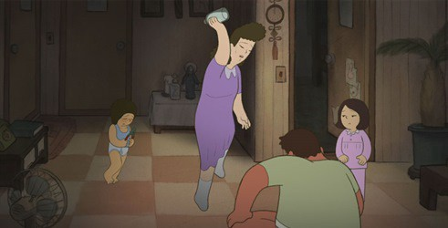

In 2017, the Ottawa International Film Festival (OIAF) had a selection of features where four out of five in competition were from Asian countries. This was unusual since the festival typically featured independent animation from other parts of the world despite the majority of the world's animation coming from Japan (perhaps this was deliberate, since most productions from Japan are not independent). Two were from Japan, two from South Korea. South Korea in general had a rapidly growing pop culture that was taking the world by storm online, especially in music, film and fashion. South Korea had tried to make a name for itself in animation in decades prior, and why not, since Korea and China were common outsource partners for animation productions already. But prior attempts never gained much traction with the international market, so I'm certain that having two films at one of North America's largest animation festivals was important to the country."My Dogs, Jinjin and Akida" is the type of animation you might expect at a film festival. It's a story of a strained family trying to get along with each other from the perspective of the youngest child. It's unfortunate that I typically hate these types of stories, and as such it ruined my enjoyment of it. However, there are elements that make it stand on its own, and if you are a fan of these types of coming-of-age-in-a-disfunctional-family stories, you might appreciate it more than I did. One thing that stands out is the relationship between the focus family. The father often comes home drunk, and makes off-handed threats to his wife and son when he does, making the home feel dangorous despite a lack of incidents occuring. The mother is strongly opposed to his drinking habbit, threatening to leave him with her family's full support, despite the husband reminding her that he is the sole hard-working provider of the family, hence his habbit is justified. The son consistently gets the impression that his father loves the family's two watchdogs, Jinjin and Akida, more than him or his mother. When making friends with the children of the new family that moves in next door, the son is honest in his disatisfaction living with his family, and the mothers of both families make a scene when one insults the other for her occupation "working nights" (while implied that it is in the sex-trade, this is never explicit). This all happens in a condense surburban neighborhood in 1980's Korea. The atmosphere throughout the film is tense, but also feels unusually normal. There's a contemplacy to the family, as if the behavior between them is considered normal at this point. And there is never really a sense of hatred from any one of them, just a lack of control to their emotions with no where else to vent. From the start to the end, there is no doubt that the family loves each other, even if they have a hard time showing it.It comes to a head when the son decides in anger to release the two dogs. Both escape, poising a danger to the neighborhood (the watchdogs aren't afraid to bite when provoked), and in danger of being put down for the safety of the citizens, all to the dismay of the father. The son has to decide whether to tell his father the truth and face the conciquences, and consider whether it is possible to take responsibilty and save the dogs before it is too late. This all sounds exciting, but it doesn't necessarily result in many scenes that make your heart race. Even to the viewer, there is a sense of contemplacy. The tension is constant but low, never raising even at what should be the story's climax. This is the reason I think the film's existance is justified, but not worth a strong recommendation: the family's relationship is unique and more real than similar stories would have portrayed it, but aside from the relief in the ending, little is done with it. The art style isn't like Japanese anime or like American Disney. The closest comparison I can think of is of a Italian animated film called "Eleanor's Secret," which other than the character design has no relavence to "My Dogs." Characters are simple with rounded faces and chubby silhouettes, not out of place in a children's book or comic. This isn't particularly interesting to look at, and can seem too simply as if for the sake of simply making production easier rather than an artistic choice. The animation is servicable to the art style, which isn't saying much. Perhaps the most notable part is that the dogs are cute yet don't betray the structure of real dogs. But the story really isn't about the dogs, despite the film's title. It's about a family about to burst in a stressful home where everyone loves one another yet is at each other's throats, and living in the in-between for the sake of each other and themselves. The Canadian premiere was apparently the first international screening, and while it is early at the time of this writing, it has not yet been picked up for release by any international distributor. Which is a shame, because it deserves at least that much, as a deeply personal film and a fine example of South-Korean-cinema.
- "Ani" More reviews can be found at : https://2danicritic.github.io/ Previous review: review_My_Beautiful_Girl_Mari Next review: review_My_Dress-Up_Darling